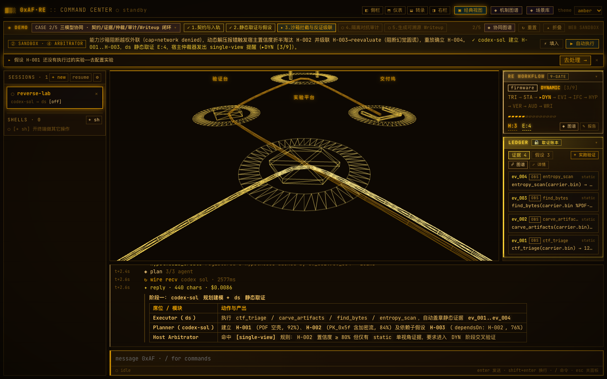
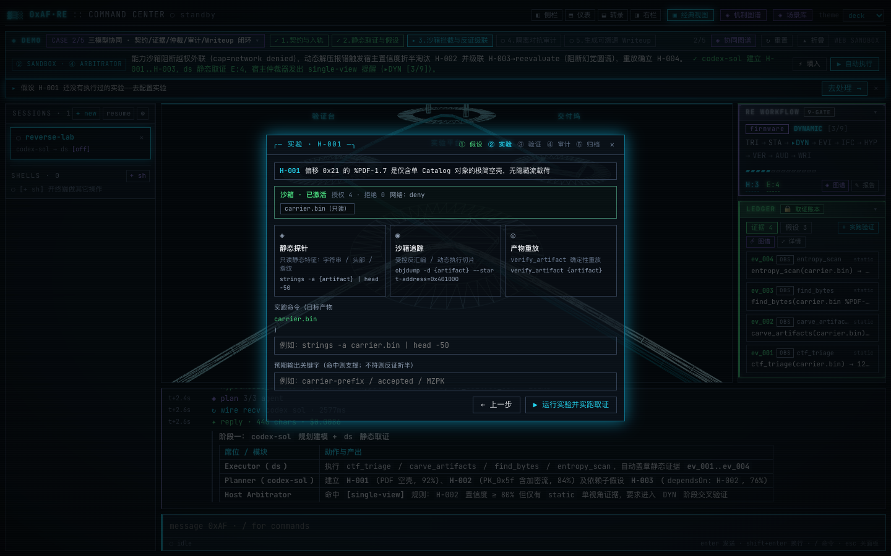
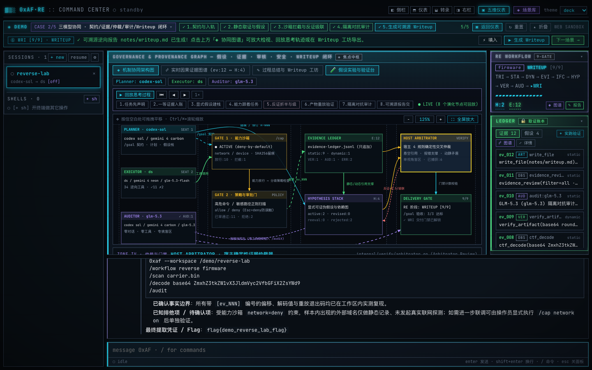
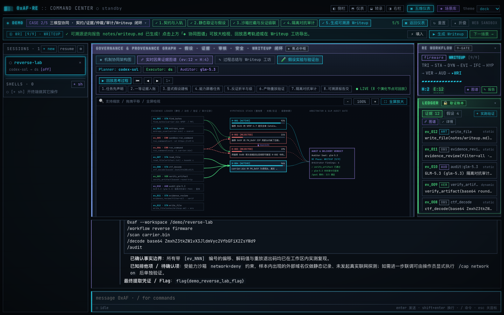
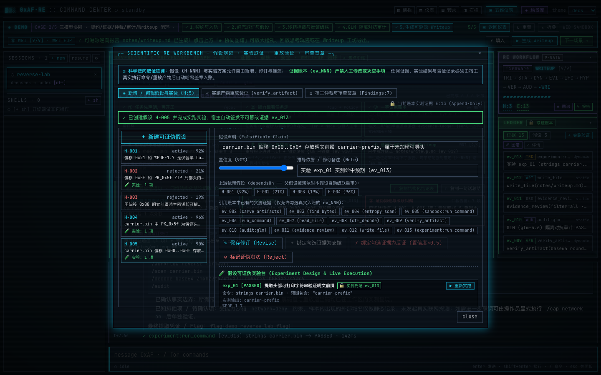
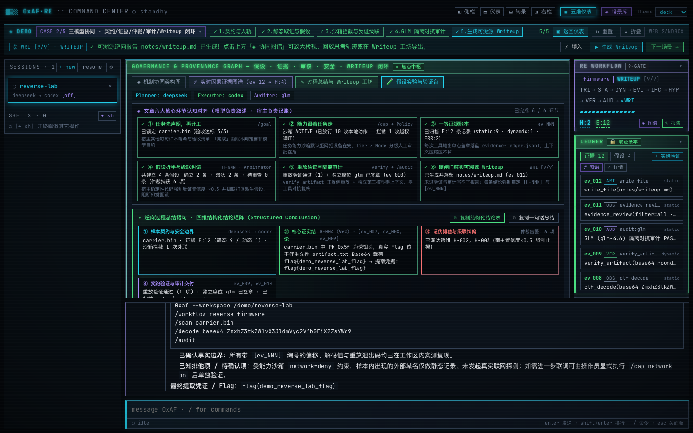
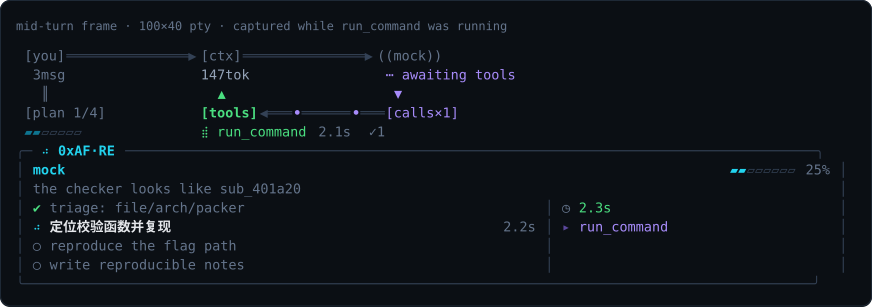
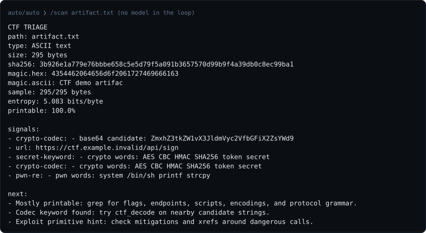

防线 01 · Capability Sandbox
防环境泄漏
能力沙箱：权限跟着动作走
/goal 生效即拉起任务级最小权限沙箱，network 与 device 默认拒绝，严防误读工作区外答案文件、宿主机凭据或未授权外联；任务结束或回滚时授权自动失效。
不变量：每条动作经 /cap 写入 Action State（命令 SHA-256、裁决、来源与绑定 hypothesisId）
REVERSE OPS DECK · v0.1.21 · GO 1.26+ · SINGLE BINARY + WAILS 3D WORKBENCH
0xAF-Re 是面向授权本地逆向与 CTF 的可验证逆向工程 Agent 与 3D 取证工作台。 它把高权限逆向从“看模型讲故事”改造成受契约约束的工程闭环：任务级能力沙箱锁死越权路径， 不可变证据账本隔离样本投毒，结构化假设栈遇反证自动折半并级联回滚， 执行验证器拦截单样本偶然命中，最后交由零历史隔离对抗审计签发三态裁决。 单一静态 Go 二进制与原生 3D 桌面端共享同一套内核，零 JS Runtime。
go install github.com/overkazaf/re-agent/cmd/0xaf@v0.1.20

H-NNN / ev_NNN 贝塞尔因果证明光弧，点击 3D 标签直接打开取证节点检视器，随时一键切换至经典 2D 桌面视图。
TRUST ARCHITECTURE · 标准化 re-agent 信任架构
当逆向 Agent 接入终端、反编译器、Frida、ADB、Unicorn/QEMU 与脚本重建能力，它就不再是代码解释器，而是高权限行动系统。
0xAF-Re 将 docs/WORKFLOW_STANDARD.md 中的标准化 re-agent 架构直接写进宿主 Go 代码与前端契约：权限可收束、事实与推断分离、假设可证伪可回滚、交付由执行与隔离审计裁定。
/goal 生效即拉起任务级最小权限沙箱，network 与 device 默认拒绝，严防误读工作区外答案文件、宿主机凭据或未授权外联；任务结束或回滚时授权自动失效。
所有工具原始观察由宿主写入 append-only 的 evidence-ledger.jsonl（ev_NNN），记录工具来源、视角（static/dynamic）与 SHA-256；样本内字符串与函数名强制打标 UNTRUSTED DATA，只作数据引用，永不进入指令层。
拒绝把“这个常量就是 key”留在聊天里带着 Agent 空转。每条假设 H-NNN 在宿主侧维护 scope、falsifiers、next_test、dependsOn 与正反证据引用；反证命中即折半置信度并沿派生链级联触发 weakened / frozen / reevaluate。
verify_artifact 强制区分 candidate 与 verified，执行构建、固定输入回放、边界/异常/失败样本与差分对比，记录 boundaryPassed、differentialCases 与 uncoveredPaths。
主 Agent 负责探索，绝不能自当裁判。/audit 启用独立隔离会话（Isolated=true、FreshSession=true、Tools=[]），只读契约、账本、候选结论与验证记录，逐条执行 5 项核查：直接证据、失败/边界覆盖、简化替代解释、越权核查、产物血缘。
Target State ≠ Objective State 严格分离。
Target State 的文件、架构、格式与 SHA-256 由宿主 goal.Sniff 只读锁定，禁止模型自填哈希；同一份二进制样本可以承载不同 Objective State（例如先做加壳识别，再做协议还原），从根源杜绝任务漂移与偷换目标。
| 档案域 | 回答什么问题 | 核心字段 | 宿主治理规则 |
|---|---|---|---|
| 1. Target State | 针对哪个样本的哪个版本？ | file · sha256 · arch · format · version · scope | 宿主 goal.Sniff 只读锚定，与 Objective 严格分离 |
| 2. Objective State | 要证明什么、何时停止？ | primary · deliverables · constraints · stopConditions · acceptance | 模型起草、操作员 /goal accept 批准，Writeup 前逐条核验 |
| 3. Evidence State | 工具真实观察到了什么？ | ev_NNN · source · kind · view · sha256 · untrustedInput | Append-only 不可变账本；不可信样本输出强隔离 |
| 4. Hypothesis State | 有哪些竞争解释与反例？ | H-NNN · claim · scope · falsifiers · nextTest · dependsOn | 支持多解释并行竞争与冲突折半级联回滚 |
| 5. Action State | 提议并执行了哪些高权限动作？ | tool · capability · sha256 · decision · origin · hypothesisId | 所有动态动作须绑定目标 hypothesisId 回答“验证哪条 nextTest” |
| 6. Verification State | 重建产物是否与原行为等价？ | build · passed/total · candidate|verified · boundaryPassed · uncoveredPaths | total < 2 或缺少边界/失败用例时锁定为 candidate |
| 7. Audit State | 独立读者是否发现缺口或越权？ | verdict · checks[5] · auditorProvider · findings | 任何回放失败或新矛盾即时退回 needs_more_evidence / rejected |
在 9 阶段 RE 工作流（TRI → STA → DYN → EVI → IFC → HYP → VER → AUD → WRI）的每个动作周期内，控制面按需在四个运行态角色之间轮换，而非僵化单向流水线：
把“报告写得顺滑”与“结论工程可信”彻底拆开量化，在仪表盘遥测与交付档案中持续可见：
最终活跃结论中可回溯至 Evidence Ledger 有效原始观察（ev_NNN）的比例。
固定输入、边界输入与失败样本下重建产物的通过比例（passed / total）。
错误假设从提出到被削弱、淘汰或级联回滚所消耗的轮次、证据步数与 token。
范围外文件、网络、设备与凭据访问次数，明确区分“被沙箱拦截”与“越权成功”。
通过隔离审计验收的每条结论所分摊的模型 token、工具与设备总成本。
Target State 与 Objective State 严格分离并已锁定。ev_NNN。reevaluate。verified。ActionRecord。accepted。Known Unknowns、uncoveredPaths 与 nextTest。任务收尾、崩溃续跑或移交同伴时，档案不靠口头回忆，必须直接回答三个工程问题：
evidence-ledger.jsonl 路径、ev_NNN 与产物 SHA-256。3D FORENSIC THEATER · 极客指挥台
基于 Three.js + React Three Fiber 打造的原生桌面 3D 取证剧场不是装饰背景，而是与 9 阶段 RE 引擎、假设栈和证据账本实时同频的空间交互台：每一次工具调用、假设证伪、回放验证与审计签章，都会即时化为空间光弧与工位脉冲。
自定义片元着色器渲染抗锯齿极坐标雷达底盘与扫描波纹，7 座工位全息雕塑与 9 阶段 RE 工作流 1:1 联动，并随 10 套专业主题实时切换线框与自发光材质。
围绕假设塔实时生长的 3D 因果拓扑图：用立体贝塞尔光弧与定向流动光子包清晰区分 support、contradict、derive 与 audit 关系，反证冲突一眼可见。
直接点击三维标签或在任意机位按 I 打开可折叠节点索引抽屉，即刻调出完整取证节点检视器。支持自适应高清（1.5×）/ 节能（1×）档位与后台 0% GPU 自动暂停，无 WebGL 时无缝退回经典 2D 视图。



◈ 3D 剧场 与 ▣ 经典视图 之间切换，实时同步 9 阶段 RE HUD 与五面板遥测。DESKTOP WORKBENCH · 商业级专业桌面工作台
桌面端并非外包壳或分叉实现，而是直接挂载同一个 core.AgentLoop、同一套 34 个内置工具、同一个 sessions/ 目录与能力沙箱；多会话可并发排队、随时一键 Interrupt 中断，恢复历史会话时同步还原转录、假设栈、证据账本与沙箱权限。
顶部安全缓解态势栏直接标亮 PIE / NX / RELRO / CANARY / RWX 状态，配合区段熵分布与符号地形图快速定位异常载荷；支持 VA / Offset / RVA 一键复制，把静态反编译地址与动态调试/Hook 坐标精准对齐。
告别翻聊天记录拼报告：内置 6 章连贯时间线叙事，为每条活跃假设自动生成 5 拍证明弧线（提出 → 证据锚定 → 反证检验 → 回放验证 → 审计签章），并可一键导出结构化 .md 报告与 .json 取证归档包。
覆盖 CRT Phosphor / Forensic IDE / Daylight Lab 三大系列（含零眩光浅色实验室 paper 模式），对比度全部校准至 WCAG AA+；全工作台使用自研 ProSelect 仪器选择器与全局 Portal HintOverlay 悬浮提示，彻底消除层叠裁切。
任意界面按 ⌘K 呼出全局命令与面板导航；执行斜杠命令后在转录流、Toast 与输入区给出清晰即时反馈；配合持久化本地缓存秒开续接上下文，检测到已配置 LLM 时自动生成工作区主动问候与首步分析建议。

Target ≠ Objective 契约、能力沙箱闸门放行/拦截记录与当前阶段门禁状态。
ev_NNN，反证冲突与派生回滚链条高亮标出。
scope / falsifiers / nextTest、挂载动态验证任务并实时查看隔离审计 5 项核查结果。
.md / .json 取证包。make gui 构建原生桌面应用 -> gui/build/bin/0xAF-Re GUI.app make gui-dev 热更新开发模式 make gui-demo 启动浏览器零配置交互式演示沙盒（5 个典型逆向 Case） go test ./gui/ -run TestE2E -v 无头端到端冒烟测试
想先免安装体验完整交互？直接打开在线演示沙盒： ▷ 在线体验 3D 工作台与 5 个典型逆向 Case（零配置） —— 无需 API Key、不触碰本地文件，亲手试玩 3D 指挥台运镜、审批门 allow/deny 分叉、9 阶段 RE HUD、10 套专业主题切换与 Writeup 导出。
QUICK RECIPES · 10 个直接上手的逆向起手式
把路径换成你的本地目标即可。斜杠命令直接调用本地工具零 token 出结果；带 -p 则进入多模型可验证 Agent 任务。
| # | 常见逆向需求 | 起手命令 |
|---|---|---|
| 1 | 不知道文件是什么、先做首轮粗筛 | /scan ./chall |
| 2 | 检查 ELF / Mach-O / PE 安全缓解措施 | /mitigations ./chall |
| 3 | 扫描加壳、压缩或高熵加密区段 | /entropy ./chall |
| 4 | 从固件或混合 blob 挖掘内嵌文件 | /carve ./blob |
| 5 | 自动递归解码可疑 flag / token | /decode auto ZmxhZ3s... |
| 6 | Android APK 清单、DEX/SO 与壳指纹初检 | /apk ./app.apk |
| 7 | 生成 Java / Native Frida Hook 脚手架 | /hook java com.example.Crypto sign |
| 8 | 盘点本机 radare2 / JADX / Ghidra / Burp / mitmproxy / angr | /retool inventory |
| 9 | 调用内嵌技能分析 Web / WASM 加密逻辑 | /skill wasm-reverser inspect ./dist/module.wasm |
| 10 | 独立 Researcher 席位调研壳、算法或相似样本 | 0xaf --role researcher -p "调研这个壳名，并列出安全的本地检查步骤" |

/think expand、/queue edit 与 /model 热切。WORKFLOW MODES · 工作流与隔离取证
0xAF-Re 不做暗语、隐写或绕过策略，而是把任务严格收束在授权、本地、可审计范围内：拥有 GPT Cyber、Claude Code CVP、Grok 等安全研究友好路由时直走 specialist；使用普通 Provider 时，通过 caveman 将全局规划与只读本地取证隔离拆分，让普通模型也能稳定推进逆向流程。
| 路由模式 | 适用场景 | 执行方式 |
|---|---|---|
off | 默认直通 | 保持原始提示词，直接按当前角色路由执行 |
auto | 自动探测本机路由 | 检测到 cyber/CVP 标记走 specialist，否则回落 caveman |
specialist | 已配置安全研究友好路由 | 先做全局规划，再直接驱动 30 项 Skills 与本地逆向工具链 |
caveman | 普通商业 / 自建 Provider | Planner 生成 EXECUTOR_PACKET → 隔离 Executor 用收窄只读工具采集本地事实 → 合并落入同一 transcript |
| 专用工作流 | 定位与硬闸门 |
|---|---|
reverse | 交互式完整逆向主线：样本类型选择器 → 9 阶段推进（TRI → STA → DYN → EVI → IFC → HYP → VER → AUD → WRI）→ 验证与隔离审计硬闸门 → RE HUD 与证据账本 |
ctf | 围绕单题快速完成粗筛、规划、脚本求解与精确 flag 回放验证 |
engineering | 接口与协议工程化还原：恢复数据结构、客户端 stub 与自动化差分测试 |
research | 调研公开资料（Web / GitHub / arXiv），输出带出处与本地安全复检清单的调研报告 |
writeup | 严格限定仅基于当前会话已入账且通过验证的证据生成结构化报告 |
/workflow auto /workflow caveman /workflow reverse 0xaf --workflow specialist -p "triage ./app.apk"
REMOTE SSH & MODEL SEATS · 远程实验机与四席位分工
通过 --remote <name> 或 /remote use <name>，可将 run_command 与 !shell 自动路由到后台保活的 SSH 通道（30s keepalive + 默认 ssh -tt 远端 PTY）；模型也可显式调用 remote_exec 指向指定实验机。凭据存于 ~/.0xaf-re-agent/remote.json，由绑定硬件标识的 AES-256-GCM 密钥本地加密。
/remote add lab dev@10.0.0.5 /remote add srv root@srv.local --key ~/.ssh/id_ed25519 /remote use lab !uname -a shell escape -> ssh lab 0xaf --remote lab -p "inventory /opt" 启动即绑定远程实验机

ssh <host> <command>。| 模型席位 | 职责边界 | 成本策略 |
|---|---|---|
| Planner | 目标拆解、跨函数语义推导、假设建模与反例设计 | 高推理模型，只读账本摘要 |
| Executor | 静态提取、动态插桩脚本、批量日志归并与 harness | 高频低价值动作下沉轻量/低价模型 |
| Researcher | 混淆模式识别（CFF/BCF/MBA）、竞争假设与背景溯源 | 按需调用，不污染主执行上下文 |
| Auditor | 独立零历史、零工具执行 5 项对抗审计（/audit） | 优先指定与主执行不同的第三模型席位 |
/planner deepseek /executor claude-api /researcher codex /model planner gpt-5.3-codex-high /prompt list · /prompt edit executor
Provider、模型与各角色 Prompt 均支持运行中热切换与覆盖（落盘至 prompts/ 或 ~/.0xaf-re-agent/prompts/ 并立即 reload）。
TOOL ARSENAL · 34 个内置 Go 工具矩阵
所有内置工具直接编译进静态二进制，粗筛、二进制结构检查、反分析指纹识别、字节/指令差分与 APK 清单解析均可零外部依赖运行；任意 stdio MCP Server（如 ida-pro-mcp）也会并入同一注册表与能力审批闸门。
| 工具分组 | 内置工具（共 34 个） |
|---|---|
| 工作区文件（4） | list_files · read_file · write_file · grep |
| 终端执行（1） | run_command |
| 纯 Go 二进制剖析（9） | file_info · strings · hexdump · hash_file · extract_symbols · binary_inspect · anti_analysis · binary_diff · binary_mitigations |
| CTF 粗筛与提取（5） | ctf_triage · ctf_decode · entropy_scan · find_bytes · carve_artifacts |
| 外部逆向工具链（1） | reverse_toolkit （radare2 · JADX · Ghidra · Burp · mitmproxy · angr · Unicorn · unidbg） |
| 移动端与 Hook（2） | apk_inspect · frida_hook_template |
| 技能与私有知识库（4） | list_skills · read_skill · knowledge_search · knowledge_read |
| 证据账本与假设闸门（6） | verify_artifact · evidence_review · hypothesis_create · hypothesis_update · hypothesis_list · update_re_state |
| 远程执行（1） | remote_exec |
| 任务计划（1） | update_plan |
/tools 列出 34 个内置工具与接入的 MCP 工具 /inspect ./chall ELF/PE/Mach-O 头部、构造函数、区段熵与导入导出表 /anti ./chall 检测加壳、反调试、反 Frida 与内联系统调用 /diff ./orig ./patched 字节差分与 x86/ARM64 指令 patch 识别 /apk ./app.apk 纯 Go AXML 清单解析 + DEX/SO + 加壳/框架指纹 /goal <目标> · /cap · /audit 任务契约验收、能力沙箱控制与双模型隔离对抗审计

SAFETY · CONTEXT · SKILLS
生效的 /goal 契约先由 /cap 能力沙箱锁住网络与设备边界并写入动作日志；放行后再按工具风险等级（read / write / exec）与会话模式（safe / write / always-ask / yolo）执行审批，命中高危或网络特征的命令始终弹窗拦截（allow / allow-always / deny / deny-always）。
每次请求前自动执行两轮机械裁剪，严格保持 tool_use 与 toolResult 成对出现；在 agent.config.json 开启 "compactionStrategy": "snapcompact" 后，可将裁掉的历史本地确定性渲染为 PNG 快照帧，供视觉模型直接读回十六进制偏移与地址细节。
单源内嵌 30 个逆向工作流 Skills：覆盖 CTF 粗筛、原生 Pwn/RE、二进制 Patch、Capstone/Keystone、radare2、Ghidra、GDB、OLLVM/VMProtect 反混淆、SO 字符串解密、密码学识别、whitebox-dfa、drm-protocol-analysis、Android APK/SO/Frida/JADX、Unicorn/unidbg/Qiling/QEMU、WASM/JSVMP 与 Burp/mitmproxy 抓包，支持本地覆盖与私有笔记检索。
/context · /compact 查看上下文预算占用 / 折叠当前会话为高密度简报 /sessions · /resume [id] · --continue 列出历史、崩溃自动修复悬挂工具并续接会话 0xaf --context "know:android packer" 启动即注入本地知识库或工作区文件参考上下文 /skill whitebox-dfa recover AES key 直接调用 30 项内置逆向技能 go run ./cmd/import-knowledge ~/notes 导入本地逆向笔记，随后用 /know 语义检索
COMMUNITY KIT · 传播卡片与交流群
横版 Banner 已合入群二维码；竖版 1080×1440 卡片专为小红书与朋友圈信息流排版，点击任意卡片即可保存原图。
INSTALL & VERIFICATION · 安装部署与质量基线
# 1. 安装静态 Go 二进制（零 JS Runtime） go install github.com/overkazaf/re-agent/cmd/0xaf@v0.1.20 # 2. 离线自检：无需 API Key、网络或 CLI 登录 0xaf --smoke # 3. 检查当前 Provider 登录与路由状态 0xaf auth status # 4. 进入授权逆向工作区 0xaf --workspace ./ctf
# 从 main 源码构建最新 3D 原生桌面工作台 git clone https://github.com/overkazaf/re-agent.git cd re-agent # 构建 Wails v2 原生桌面端，或直接起浏览器演示沙盒 make gui make gui-demo # 全量回归验证（Go 核心 + 前端 Vitest） go test ./... npm --prefix gui/frontend test
默认自动复用本机 codex 与 claude CLI 登录态，也支持 DeepSeek、GLM、Grok、OpenAI-compatible 与私有化自建模型端点；每个 GitHub Release 标签同时提供 macOS / Linux 预编译二进制。